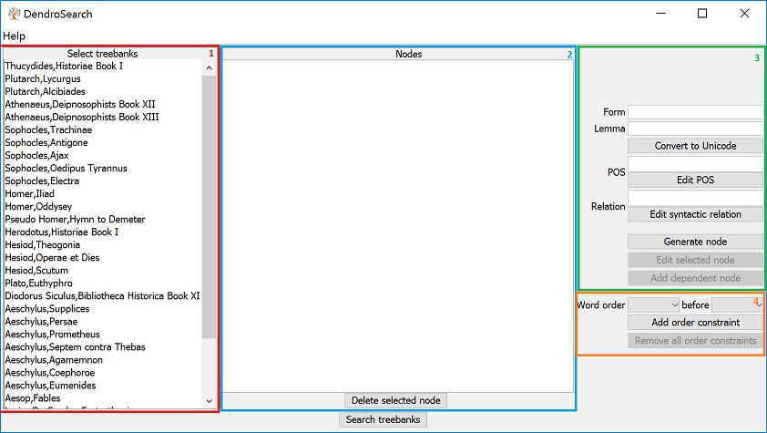

DendroSearch User Guide
1. Introduction
DendroSearch is a tool for browsing the Ancient Greek Dependency Treebanks in a user-friendly way. For any problems or bug reports, please contact the developer of this tool.
2. Overview
Users are presented with the following interface:

Treebank selection panel. Contains a list of all the treebanks provided to the system. Users can select in which treebanks they would like to search.
Nodes panel. Contain a tree-like representation of the user's search query.
Node creation panel. Here the user can specify the specific grammatical construction they would like to search for, by specifying word form, lemma, part-of-speech tag and syntactic relation (when any of the fields are left empty, they are ignored during the search). Clicking 'Edit POS' or 'Edit syntactic relation' will bring the user to a menu to select which morphological and syntactic information they would like to include (when unsure about the meaning of a specific syntactic relation, clicking on it will open the specific page in the guidelines of the AGDT). Advanced users can also bypass the 'Edit POS' and 'Edit relation' menu by inputting their query directly as a regular expression in the 'POS' and 'Relation' fields.
The input of the 'form' and 'lemma' fields needs to be in Unicode, but they can also be filled in in Beta Code and be converted with the 'Convert to Unicode' button, using the following sheet as a reference (source: Perseus Digital Library):

By default no dependency relationship is assumed between the created nodes. If the user would like to define a head-dependency relationship, they need to select the head node in the 'Nodes' panel, fill out the fields for the dependent node and click 'Add dependent node'.
Word order panel. By default the query nodes can occur in any internal order. If the user would like to specify a word order relationship, they need to select the relevant nodes from the dropdown menus and click 'Add order constraint'.
3. Some example queries
3.1 Infinitives with an accusative subject ('ACI' construction)
- Go to 'Edit POS', uncheck 'Any' and choose 'Infinitive' with 'Mood'. 'Generate POS-tag', 'Generate Node'.
- In the 'Nodes' menu, select the node that has just been generated. Go to 'Edit POS' and choose 'Accusative' with 'Case'. 'Generate POS-tag'. Go to 'Edit Relation' and click 'Include' with 'Subject (SBJ)', 'Generate syntactic relation'. 'Add dependent node'.
- Select all texts of Sophocles (use the SHIFT-key) in 'Select treebanks'. 'Search treebanks'. Number of hits: 219 (if all went right).
- If you want to save the result of your query, click 'Browse...', choose a map and a name for your file (e.g. 'results.txt'). 'Save output to text file'.
3.2 Aspect of infinitives depending on the verb λέγω
- In 'Lemma', fill in le/gw. 'Convert to Unicode'. 'Generate node'.
- Select the generated node in the 'Nodes' menu. Go to 'Edit POS', choose 'Infinitive' with 'Mood' and choose an aspectual stem with 'Tense' (e.g. 'Aorist'). Be sure that 'Lemma' is empty, 'Add dependent node'.
- Number of hits in Sophocles: 3 (with the aorist stem).
3.3 Genitive constructions of the type 'article GEN-article GEN-noun noun' (e.g. ὁ τῆς μητρὸς υἱός)
- First in the 'tree' is the noun. Go to 'Edit POS' and choose 'Noun' with 'Part of speech'. 'Generate node'.
- Next is the article. Select the generated Node in 'Nodes'. Go to 'Edit POS' and choose 'Article'. Go to 'Edit syntactic relation' and include 'Attribute (ATR)'. 'Add dependent node'.
- Next the noun in the genitive, also dependent on the noun. Again select the first node. In 'Edit POS', choose 'Noun' and 'Genitive'. With 'Edit syntactic relation', include 'Attribute' again. 'Add dependent node'.
- Next the article of the genitive noun. Select the node of the genitive noun (normally the second). With 'Edit POS', choose 'Article' and 'Genitive'. 'Relation' can stay 'Attribute'. 'Add dependent node'.
- Finally the word order needs to be indicated. Add the following 'word order constraints' in the menu below 'Add dependent node': 4 (article) before 3 (genitive article); 3 (genitive article) before 2 (genitive noun); 2 (genitive noun) before 1 (noun).
- You will get the following 2 hits in Sophocles: ἡ ξύνοικος τῶν κάτω θεών Δίκη and τὰ σέμν̓ ἵν̓ ἥκει τοῦ θεοῦ μαντεύματα.